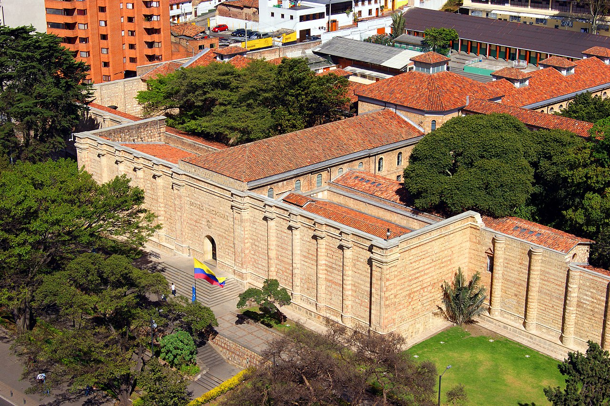

<div class="tab" *ngIf="showDescription()">
  
  <div class="card-body">
    <h5 class="card-title">Museo Nacional de Colombia</h5>
    <p class="card-text" style="text-align: justify">
      El Museo Nacional de Colombia fue creado en 1823, y es uno de los más antiguos de América.
      Ofrece a sus visitantes diecisiete salas de exposición permanente, en las cuales se exhiben alrededor de 2.500
      obras y objetos, símbolos de la historia y el patrimonio nacional. En su calendario de exposiciones temporales, el
      Museo presenta muestras de historia, arte y arqueología nacionales e internacionales. Adicionalmente, brinda una
      variada programación académica y cultural que incluye conferencias, conciertos, presentaciones de teatro y danza y
      proyecciones audiovisuales, entre otros.
      Su acervo se divide en cuatro colecciones: arte, historia, arqueología y etnografía. Su colección de arte
      colombiano, latinoamericano y europeo incluye pinturas, dibujos, grabados, esculturas, instalaciones y artes
      decorativas desde el período colonial hasta la actualidad. Su inmueble fue originalmente la penitenciaría del
      panoptico, diseñado por el danés Thomas Reed, construcción que fue ordenada por Eustorgio Salgar durante su
      mandato como presidente de los Estados Unidos de Colombia. Frente al museo se encuentra la estación subterránea de
      TransMilenio que lleva su mismo nombre "Museo Nacional".
      El Museo Nacional de Colombia nació por iniciativa de Simón Bolívar y Francisco de Paula Santander, en una época
      en la que se libraban varias batallas para lograr la independencia.
    </p>
    <p class="card-text" style="text-align: justify">
      País: Colombia <br>
      Distrito Capital	Bandera de Bogotá Bogotá <br>
      Localidad:	Bogotá <br>
      Dirección:	Carrera 7, n.° 28-66 <br>
      Bogotá, Colombia
    </p>
    <!-- <button (click)="cerrarVentana()">Cerrar</button> -->
  </div>
</div>
